Buildings 262
Sort
 Barbican Estate1976 · London
Barbican Estate1976 · London Royal National Theatre1976 · London
Royal National Theatre1976 · London Sainte-Marie de La Tourette1960 · Éveux
Sainte-Marie de La Tourette1960 · Éveux Museum of Modern Art, Rio de Janeiro1967 · Rio de Janeiro
Museum of Modern Art, Rio de Janeiro1967 · Rio de Janeiro Herbert F. Johnson Museum of Art1973 · Ithaca
Herbert F. Johnson Museum of Art1973 · Ithaca National Library of Argentina1992 · Buenos Aires
National Library of Argentina1992 · Buenos Aires Park Hill1961 · Sheffield
Park Hill1961 · Sheffield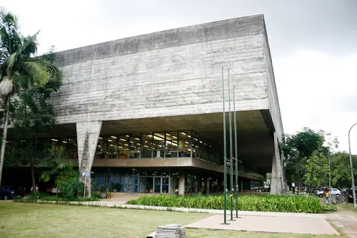
FAU-USP Building1969 · São Paulo Robert C. Weaver Federal Building1968 · Washington
Robert C. Weaver Federal Building1968 · Washington Grand Théâtre de Québec1971 · Quebec City
Grand Théâtre de Québec1971 · Quebec City Habitat 671967 · Montreal
Habitat 671967 · Montreal Trellick Tower1972 · London
Trellick Tower1972 · London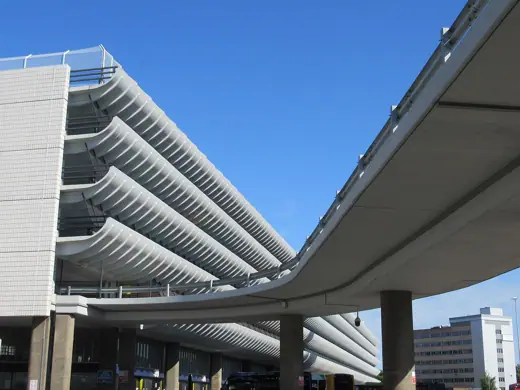
Preston Bus Station1969 · Preston Secretariat Building1953 · Chandigarh
Secretariat Building1953 · Chandigarh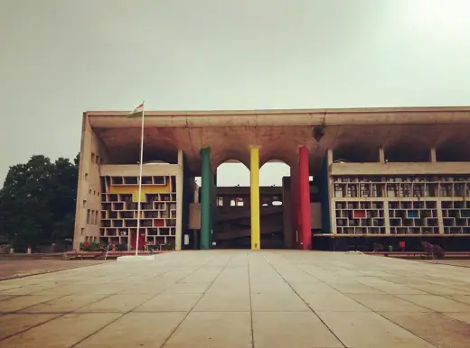
Palace of Justice (Punjab and Haryana High Court)1955 · Chandigarh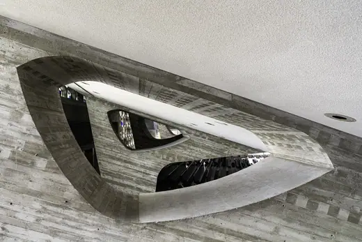
St. John's Abbey Church1961 · Collegeville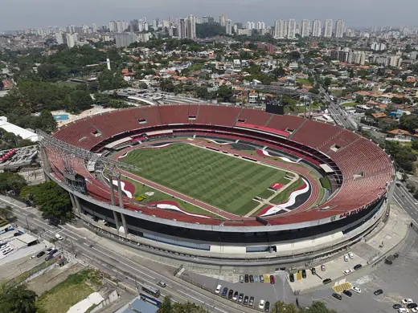
Morumbi Stadium (Estádio Cícero Pompeu de Toledo)1970 · São Paulo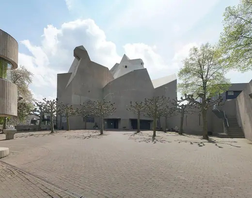
Neviges Pilgrimage Church1968 · Velbert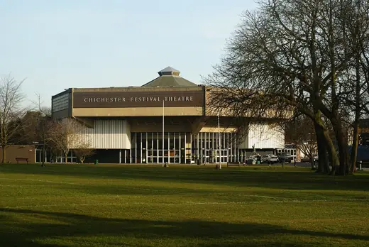
Chichester Festival Theatre1962 · Chichester Buzludzha Monument1981 · Kazanlak
Buzludzha Monument1981 · Kazanlak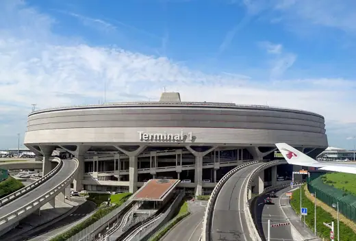
Paris-Charles de Gaulle Airport Terminal 11974 · Roissy-en-France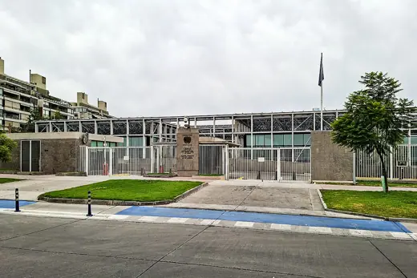
ECLAC Building1966 · Santiago Breuer Building1966 · New York
Breuer Building1966 · New York Geisel Library1970 · San Diego
Geisel Library1970 · San Diego Capitol Complexc. 1962 · Chandigarh
Capitol Complexc. 1962 · Chandigarh Barbican Centre1982 · London
Barbican Centre1982 · London Unité d'Habitation1952 · Marseille
Unité d'Habitation1952 · Marseille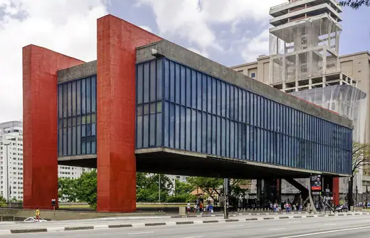
MASP1968 · São Paulo Florey Building1971 · Oxford
Florey Building1971 · Oxford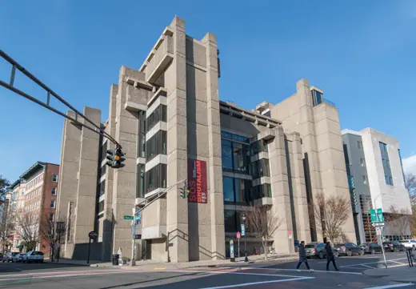
Yale Art and Architecture Building1963 · New Haven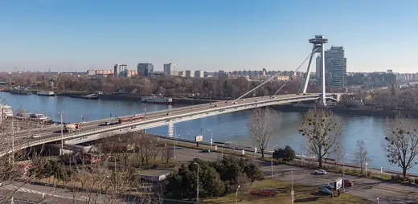
Most SNP (UFO Bridge)1972 · Bratislava Kyoto International Conference Center1966 · Kyoto
Kyoto International Conference Center1966 · Kyoto Alexandra Road Estate1978 · London
Alexandra Road Estate1978 · London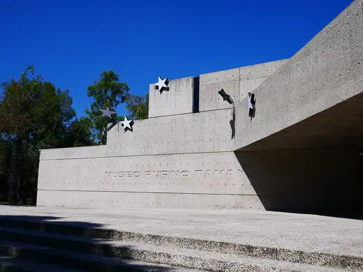
Museo Tamayo1981 · Mexico City IIT Kanpur Academic Areac. 1966 · Kanpur
IIT Kanpur Academic Areac. 1966 · Kanpur Balfron Tower1967 · London
Balfron Tower1967 · London Bank of London and South America1966 · Buenos Aires
Bank of London and South America1966 · Buenos Aires Knights of Columbus Building1969 · New Haven
Knights of Columbus Building1969 · New Haven Montreal Olympic Stadium1976 · Montreal
Montreal Olympic Stadium1976 · Montreal Metropolitan Cathedral of Rio de Janeiro1979 · Rio de Janeiro
Metropolitan Cathedral of Rio de Janeiro1979 · Rio de Janeiro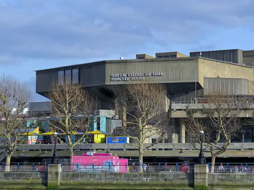
Queen Elizabeth Hall1967 · London Lyndon Baines Johnson Library and Museum1971 · Austin
Lyndon Baines Johnson Library and Museum1971 · Austin OCBC Centre1976 · Singapore
OCBC Centre1976 · Singapore